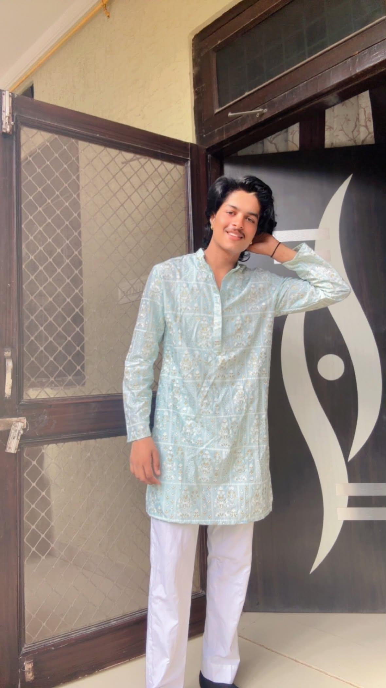
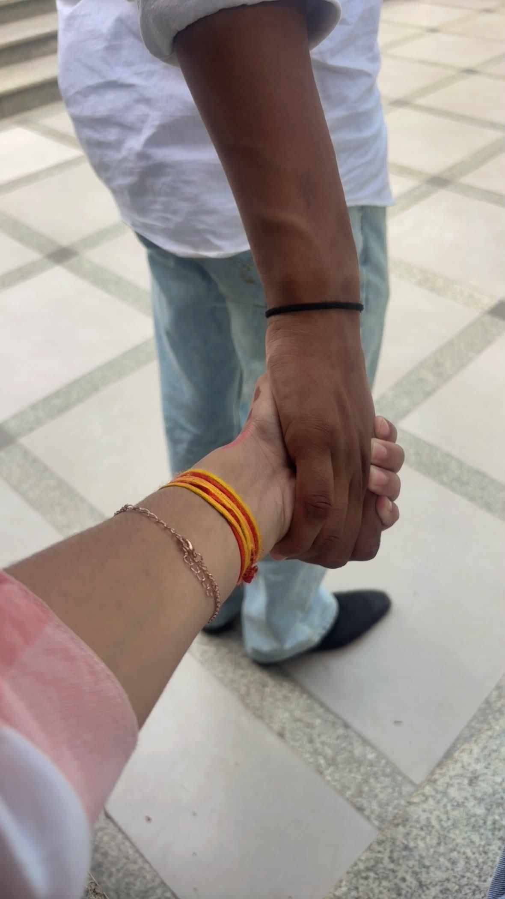
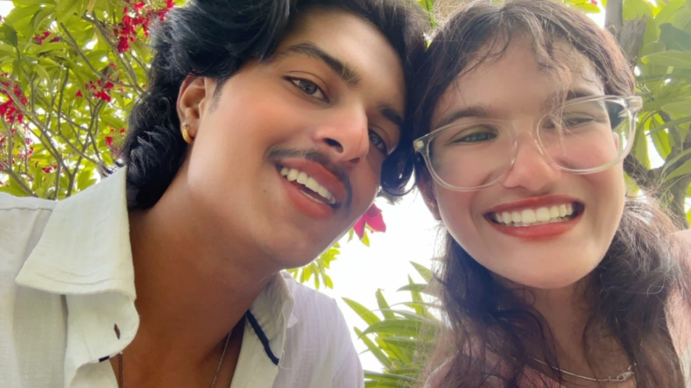
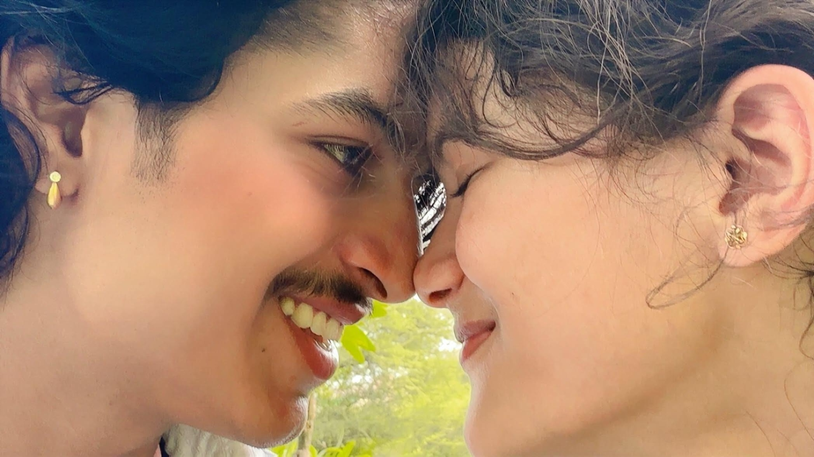
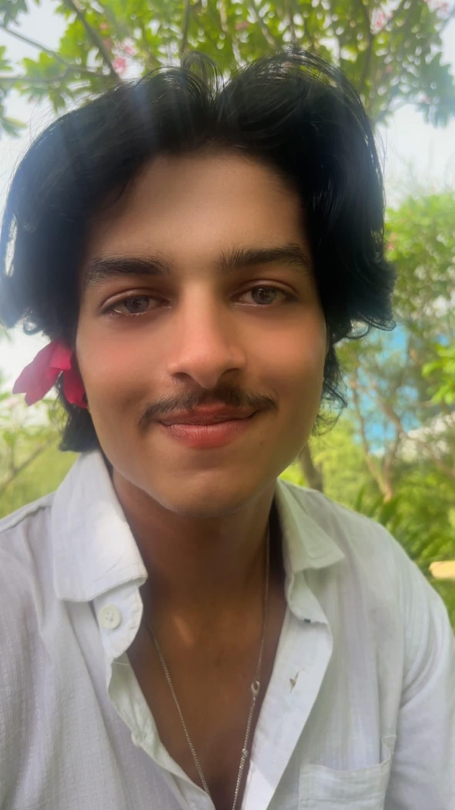
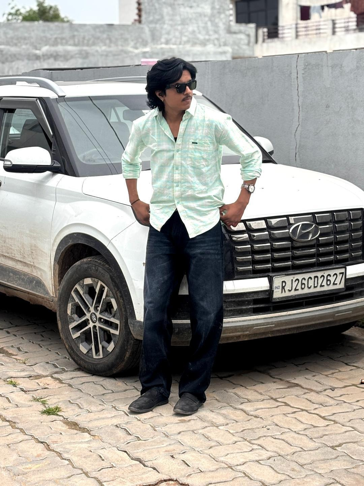

I love the actual you
(the biker, the soft guy, and every version in between)
Not just the bike guy or the perfume guy. I love the caring, sweet, respectful, funny, serious, soft and cute Kartik that I get to know.

The way your eyes crinkle
When you genuinely laugh at my absolutely terrible, dry jokes. It is the purest sight on earth, Kartik. Your whole face lights up and the entire room suddenly feels warmer.
"you tell me everything. even the little things."

Never letting go of my hand
Whenever we meet, you hold my hand like it is the most natural thing in the world. You never really let go.
Your random “I love yous”
You say it for no reason, just because. Those tiny messages are still some of my favorite things.
"you came all the way from Tonk just to see me for 15 minutes."
The way you make me happy
You order things randomly because you saw them and thought of me. You show up, you tease me, and you make ordinary days feel special.
"I saw this and thought of you." — somehow, your favorite love language.
Your sunshine kind of heart
Sunflowers remind me of you because you are totally a sunshine to me. You are sweet to everyone, and you respect people in a way I deeply love.
The biker and the soft guy
You can talk about bikes, the GT 650, cars, watches, perfumes and earning, then turn around and be the softest, cutest person I know.
"you never really let go of my hand, not even on the rides home."
The flower bouquet
Flowers will always remind me of you because of the bouquet you gave me when you proposed. That moment still feels like a pressed flower between the pages of my heart.

You cried when I said yes
Your happy tears told me how much my answer meant to you. I keep that softness with me every time I think about our proposal.
"you cried when i said yes... and i loved you even more."

The first time a hug meant everything.
One more first I will always keep close.
Fifteen minutes, all the way from Tonk, and somehow enough for a whole day of happiness.
I saw this and thought of you. Your sweetest little surprise language.
The way you respect me and everyone around you is one of the things I love most.
The soft and cute Kartik that not everyone gets to see.

Bikes, cars, watches, perfumes, earning, and the ambition behind all of it.

Just for being you — the best boyfriend, biker, and human I could ever ask for.
Hugging in the lift, didi walking in on us, and both of us trying not to burst out laughing.
An ongoing competition nobody asked for... gigliii & gigluuuu. You know you win every time.
Every little detail, what you did, who you met. I love knowing all your little things.
The way your eyes light up whenever you talk about bikes and rides. You look so handsome when passionate.
You can tease me so hard, and five seconds later be the sweetest, most mature and protective boy.
How hard you work to earn, how driven you are, and how much you care about our future.
The way you always smell amazing, your classic taste, and every signature Kartik habit.
You cried when I said yes. That single moment proved how deeply real your love is.
"I love you for being the actual you. I am always right here, and I'm not going anywhere." ♡
Add Reason #26 to Kartik’s Scrapbook
Pin a new sticky note, a secret memory, or an inside joke straight into this birthday ledger.